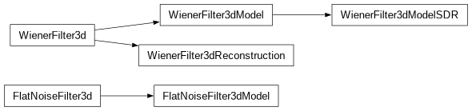
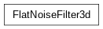
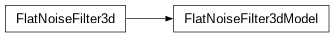
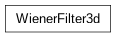
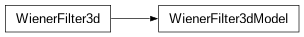
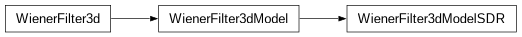
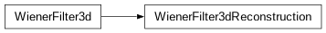

SSNRBasedFiltering module¶
SSNRBasedFiltering.py
This module contains classes for filtering images based on their total SSNR.
The detailed documentation for this class will be provided in the further release.

- class SSNRBasedFiltering.FlatNoiseFilter3d(ssnr_calculator, apodization_filter=1)[source]¶
Bases:
object
- class SSNRBasedFiltering.FlatNoiseFilter3dModel(ssnr_calculator, apodization_filter=1)[source]¶
Bases:
FlatNoiseFilter3d
- class SSNRBasedFiltering.WienerFilter3d(ssnr_calculator, apodization_filter=1)[source]¶
Bases:
object
- class SSNRBasedFiltering.WienerFilter3dModel(ssnr_calculator, apodization_filter=1)[source]¶
Bases:
WienerFilter3d
- class SSNRBasedFiltering.WienerFilter3dModelSDR(ssnr_calculator, apodization_filter=1)[source]¶
Bases:
WienerFilter3dModel
- class SSNRBasedFiltering.WienerFilter3dReconstruction(ssnr_calculator, apodization_filter=1)[source]¶
Bases:
WienerFilter3d